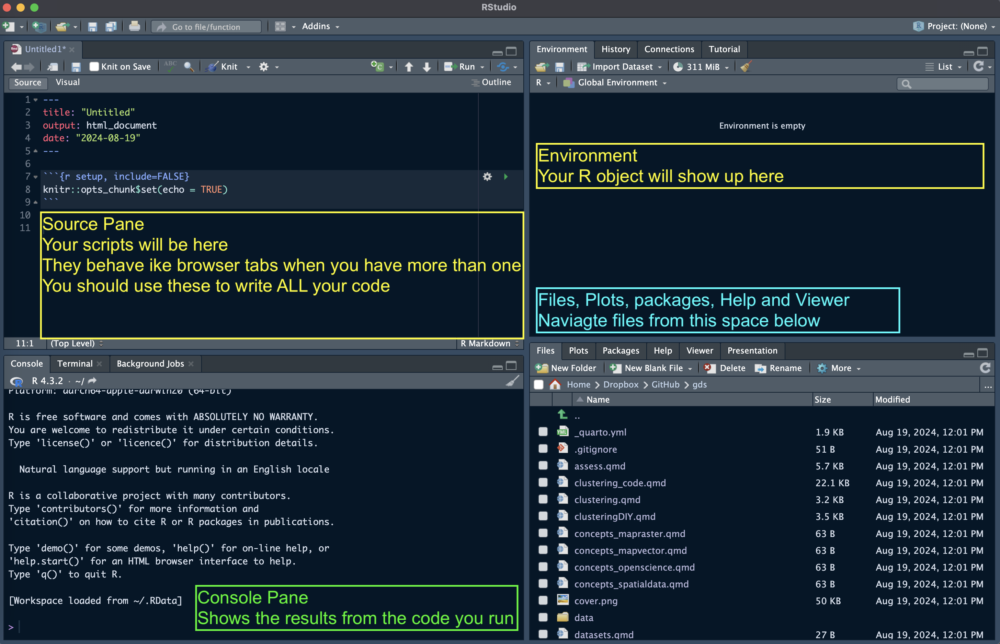

R
To run the analysis and reproduce the code in R, you need the following software:
- R-4.2.2
- RStudio 2022.12.0-353
- The list of libraries in the next section
To install and update:
- R, download the appropriate version from The Comprehensive R Archive Network (CRAN)
- RStudio, download the appropriate version from Posit
To check your version of:
- R and libraries run
sessionInfo() - RStudio click
helpon the menu bar and thenAbout - Quarto check the
versionfile in the quarto folder on your computer.
R Basics
Starting a session
Upon startup, RStudio will look something like this. Note: the Pane Layout and Appearance settings can be altered e.g. on Mac OS by clicking RStudio>Preferences>Appearance and RStudio>Preferences>Pane Layout. I personally like to have my Console in the top right corner and Environment in the bottom left and keep the Source and Environment panes wider than Console and Files for easier readability. Default settings will probably have the Console in the bottom left and Environment in the top right. You will also have a standard white background; but you can chose specific themes.
At the start of a session, it’s good practice clearing your R environment:
rm(list = ls())In R, we are going to be working with relative paths. With the command getwd(), you can see where your working directory is currently set. You should have set this following the pre-recorded video.
getwd() If the directory is not set yet, type in setwd("~/pathtodirectory") to set it. It is crucial to perform this step at the beginning of your R script, so that relative paths can be used in the subsequent parts.
setwd("~/Dropbox/Github/gds")If you have set your directory correctly, you can check it with getwd()
Important: You do not need to set your working directory if you are using an R-markdown or Quarto document and you have it saved in the right location. The pathway will start from where your document is saved.
Using the console
Try to use the console to perform a few operations. For example type in:
1+1[1] 2Slightly more complicated:
print("hello world")[1] "hello world"If you are unsure about what a command does, use the “Help” panel in your Files pane or type ?function in the console. For example, to see how the dplyr::rename() function works, type in ?dplyr::rename. When you see the double colon syntax like in the previous command, it’s a call to a package without loading its library.
R Objects
Everything in R is an object. R possesses a simple generic function mechanism which can be used for an object-oriented style of programming. Indeed, everything that happens in R is the result of a function call (John M. Chambers). Method dispatch takes place based on the class of the first argument to the generic function.
All R statements where you create objects – “assignments” – have this form: object_name <- value. Assignment can also be performed using = instead of <-, but the standard advice is to use the latter syntax (see e.g. The R Inferno, ch. 8.2.26). In RStudio, the standard shortcut for the assignment operator <- is Alt + - (in Windows) or option + - (in Mac OS).
A mock assignment of the value 30 to the name age is reported below. In order to inspect the content of the newly created variable, it is sufficient to type the name into the console. Within R, the hash symbol # is used to write comments and create collapsible code sections.
age <- 30 # Assign the number 30 to the name "age"
age # print the variable "age" to the console[1] 30A small note on variable types
The function class() is used to inspect the type of an object.
There are four main types of variables:
- Logical: boolean/binary, can either be
TRUEorFALSE
class(TRUE)[1] "logical"- Character (or string): simple text, including symbols and numbers. It can be wrapped in single or double quotation, which usually highlights text in a different colour in RStudio
class("I am a city")[1] "character"- Numeric: Numbers. Mathematical operators can be used here.
class(2022)[1] "numeric"- Factor: Characters or strings, but ordered in categories.
class(as.factor(c("I", "am", "a", "factor")))[1] "factor"Another important value to know is NA. It stands for “Not Available” and simply denotes a missing value.
vector_with_missing <- c(NA, 1, 2, NA)
vector_with_missing[1] NA 1 2 NALogical operators and expressions
==asks whether two values are the same or equal (“is equal to”)!=asks whether two values are the not the same or unequal (“is not equal to”)>greater than>=greater or equal to<=smaller or equal to&stands for “and” (unsurprisingly)|stands for “or”!stands for “not
Installing packages
In R, packages are collections of functions, compiled code and sample data. They functionally act as “extensions” to the base R language, and can help you accomplish all operations you might want to perform in R (if no package serves your purpose, you may want to write an entirely new one!). Now, we will install the R package tidyverse. Look at the link to see what tidyverse includes, and directly load a .csv file (comma-separated values) into R from your computer.
if(!require("tidyverse")) install.packages("tidyverse")Loading required package: tidyverse── Attaching core tidyverse packages ──────────────────────── tidyverse 2.0.0 ──
✔ dplyr 1.1.4 ✔ readr 2.1.5
✔ forcats 1.0.0 ✔ stringr 1.5.1
✔ ggplot2 3.4.4 ✔ tibble 3.2.1
✔ lubridate 1.9.3 ✔ tidyr 1.3.1
✔ purrr 1.0.2
── Conflicts ────────────────────────────────────────── tidyverse_conflicts() ──
✖ dplyr::filter() masks stats::filter()
✖ dplyr::lag() masks stats::lag()
ℹ Use the conflicted package (<http://conflicted.r-lib.org/>) to force all conflicts to become errorslibrary(tidyverse) Examples
Let’s create some random R objects:
## Entering random
London <- 8982000 # population
Bristol <- 467099 # population
London_area <-1572 # area km2
Bristol_area <-110 # area km2
London[1] 8982000Calculate Population Density in London:
London_pop_dens <- London/London_area
Bristol_pop_dens <- Bristol/Bristol_area
London_pop_dens[1] 5713.74The function c(), which you will use extensively if you keep coding in R, means “concatenate”. In this case, we use it to create a vector of population densities for London and Bristol:
c(London_pop_dens, Bristol_pop_dens)[1] 5713.740 4246.355pop_density <- c(London_pop_dens, Bristol_pop_dens) # In order to create a vector in R we make use of c() (which stands for concatenate)Create a character variable:
x <- "a city"
class(x)[1] "character"typeof(x)[1] "character"length(x)[1] 1Data Structures
Objects in R are typically stored in data structures. There are multiple types of data structures:
Vectors
In R, a vector is a sequence of elements which share the same data type. A vector supports logical, integer, double, character, complex, or raw data types.
# first vector y
y <- 1:10
as.numeric(y) [1] 1 2 3 4 5 6 7 8 9 10class(y)[1] "integer"length(y)[1] 10# another vector z
z <- c(2, 4, 56, 4)
z[1] 2 4 56 4# and another one called cities
cities <- c("London", "Bristol", "Bath")
cities[1] "London" "Bristol" "Bath" Matrices
Two-dimensional, rectangular, and homogeneous data structures. They are similar to vectors, with the additional attribute of having two dimensions: the number of rows and columns.
m <- matrix(nrow = 2, ncol = 2)
m [,1] [,2]
[1,] NA NA
[2,] NA NAn <- matrix(c(4, 5, 78, 56), nrow = 2, ncol = 2 )
n [,1] [,2]
[1,] 4 78
[2,] 5 56Lists
Lists are containers which can store elements of different types and sizes. A list can contain vectors, matrices, dataframes, another list, functions which can be accessed, unlisted, and assigned to other objects.
list_data <- list("Red", "Green", c(21,32,11), TRUE, 51.23, 119.1)
print(list_data)[[1]]
[1] "Red"
[[2]]
[1] "Green"
[[3]]
[1] 21 32 11
[[4]]
[1] TRUE
[[5]]
[1] 51.23
[[6]]
[1] 119.1Data frames
They are the most common way of storing data in R and are the most used data structure for statistical analysis. Data frames are “rectangular lists”, i.e. tabular structures in which every element has the same length, and can also be thought of as lists of equal length vectors.
## Here is a data frame of 3 columns named id, x, y and 10 rows
dat <- data.frame(id = letters[1:10], x = 1:10, y = 11:20)
dat id x y
1 a 1 11
2 b 2 12
3 c 3 13
4 d 4 14
5 e 5 15
6 f 6 16
7 g 7 17
8 h 8 18
9 i 9 19
10 j 10 20head(dat) # read first 5 rows id x y
1 a 1 11
2 b 2 12
3 c 3 13
4 d 4 14
5 e 5 15
6 f 6 16tail(dat) id x y
5 e 5 15
6 f 6 16
7 g 7 17
8 h 8 18
9 i 9 19
10 j 10 20names(dat)[1] "id" "x" "y" Dataframes in R are indexed by rows and columns numbers using the [rows,cols] syntax. The $ operator allows you to access columns in the dataframe, or to create new columns in the dataframe.
dat[1,] # read first row and all colum ns id x y
1 a 1 11dat[,1] # read all rows and the first column [1] "a" "b" "c" "d" "e" "f" "g" "h" "i" "j"dat[6,3] # read 6th row, third column[1] 16dat[c(2:4),] # read rows 2 to 4 and all columns id x y
2 b 2 12
3 c 3 13
4 d 4 14dat$y # read column y [1] 11 12 13 14 15 16 17 18 19 20dat[dat$x<7,] # read rows that have a x value less than 7 id x y
1 a 1 11
2 b 2 12
3 c 3 13
4 d 4 14
5 e 5 15
6 f 6 16dat$new_column <- runif(10, 0, 1) # create a new variable called "new_column"
dat id x y new_column
1 a 1 11 0.4251293
2 b 2 12 0.8609341
3 c 3 13 0.3401190
4 d 4 14 0.4237035
5 e 5 15 0.3724871
6 f 6 16 0.9377898
7 g 7 17 0.2376889
8 h 8 18 0.1666128
9 i 9 19 0.3656720
10 j 10 20 0.3204395Exercises
1. Vectors
- Assign the first 10 elements of the Fibonacci sequence to a numeric vector called
fibonacci_vector.
Show the code
fibonacci_vector <- c(0, 1, 1, 2, 3, 5, 8, 13, 21, 34)- Assign the names of the people sitting at your table to a character vector.
Show the code
people_vector <- c("Elisabetta", "Carmen", "Habib")- Inspect the
lengthandclassof your numeric and character vectors.
Show the code
length(fibonacci_vector)[1] 10Show the code
length(people_vector)[1] 3Show the code
class(fibonacci_vector)[1] "numeric"Show the code
class(people_vector)[1] "character"- Construct a numeric vector containing 10 numbers generated at random from the Uniform distribution with interval [0,1] (Hint:
runif()).
Show the code
random_uniform <- runif(10, 0, 1)- Multiply this vector by a scalar.
Show the code
random_uniform*3 [1] 2.4163856 2.6364099 0.7007275 0.2598835 0.5576067 1.1404259 2.4600561
[8] 0.1345584 2.6864704 0.6759580- Construct a numeric vector by multiplying
fibonacci_vectorby the vector constructed at step 4.
Show the code
new_numeric_vector <- fibonacci_vector*random_uniform2. Matrices
- Construct a 3x3 matrix containing
fibonacci_vector, the vector of random draws from the uniform distribution, and their multiplication.
Show the code
new_matrix <- matrix(c(fibonacci_vector, random_uniform, new_numeric_vector), ncol =3)- Convert the matrix to a dataframe (Hint:
as.data.frame())
Show the code
new_df <- as.data.frame(new_matrix)- Name the dataframe columns (Hint:
dplyr::rename())
Show the code
new_df <- new_df %>%
dplyr::rename(fibonacci_vector = V1,
random_uniform = V2,
new_numeric_vector = V3)3. Data Frames
- Construct a
Data Framewith 5 columns with an ID, City Name, Population, Area and Population density of 3 cities in the UK. You can use London, Bristol and other cities in the UK.
Show the code
UK_cities = data.frame(
id = c(1,2,3),
city_name = c("London", "Bristol", "Liverpool"),
population = c(8982000, 467099, 864122),
area = c(1572, 110, 200)
)
UK_cities$pop_density = UK_cities$population/UK_cities$area
# or the tidy way
UK_cities_tidy = UK_cities %>%
mutate(pop_density = population/area)
# Get the structure of the data frame
str(UK_cities)'data.frame': 3 obs. of 5 variables:
$ id : num 1 2 3
$ city_name : chr "London" "Bristol" "Liverpool"
$ population : num 8982000 467099 864122
$ area : num 1572 110 200
$ pop_density: num 5714 4246 4321Show the code
# Print the summary
print(summary(UK_cities)) id city_name population area
Min. :1.0 Length:3 Min. : 467099 Min. : 110.0
1st Qu.:1.5 Class :character 1st Qu.: 665610 1st Qu.: 155.0
Median :2.0 Mode :character Median : 864122 Median : 200.0
Mean :2.0 Mean :3437740 Mean : 627.3
3rd Qu.:2.5 3rd Qu.:4923061 3rd Qu.: 886.0
Max. :3.0 Max. :8982000 Max. :1572.0
pop_density
Min. :4246
1st Qu.:4283
Median :4321
Mean :4760
3rd Qu.:5017
Max. :5714 Import data from csv
Densities_UK_cities <- read_csv("data/London/Tables/Densities_UK_cities.csv")Rows: 76 Columns: 5
── Column specification ────────────────────────────────────────────────────────
Delimiter: ","
chr (2): city, pop
dbl (1): n
num (2): area, density
ℹ Use `spec()` to retrieve the full column specification for this data.
ℹ Specify the column types or set `show_col_types = FALSE` to quiet this message.Densities_UK_cities# A tibble: 76 × 5
n city pop area density
<dbl> <chr> <chr> <dbl> <dbl>
1 1 Greater London 9,787,426 1738. 5630
2 2 Greater Manchester 2,553,379 630. 4051
3 3 West Midlands 2,440,986 599. 4076
4 4 West Yorkshire 1,777,934 488. 3645
5 5 Greater Glasgow 957,620 368. 3390
6 6 Liverpool 864,122 200. 4329
7 7 South Hampshire 855,569 192 4455
8 8 Tyneside 774,891 180. 4292
9 9 Nottingham 729,977 176. 4139
10 10 Sheffield 685,368 168. 4092
# ℹ 66 more rowsYou can also view the data set with:
glimpse(Densities_UK_cities)Rows: 76
Columns: 5
$ n <dbl> 1, 2, 3, 4, 5, 6, 7, 8, 9, 10, 11, 12, 13, 14, 15, 16, 17, 18,…
$ city <chr> "Greater London", "Greater Manchester", "West Midlands", "West…
$ pop <chr> "9,787,426", "2,553,379", "2,440,986", "1,777,934", "957,620",…
$ area <dbl> 1737.9, 630.3, 598.9, 487.8, 368.5, 199.6, 192.0, 180.5, 176.4…
$ density <dbl> 5630, 4051, 4076, 3645, 3390, 4329, 4455, 4292, 4139, 4092, 42…table(Densities_UK_cities$city)
Aberdeen Accrington/ Rossendale Barnsley/ Dearne Valley
1 1 1
Basildon Basingstoke Bedford
1 1 1
Belfast Birkenhead Blackburn
1 1 1
Blackpool Bournemouth/ Poole Brighton and Hove
1 1 1
Bristol Burnley Burton-upon-Trent
1 1 1
Cambridge Cardiff Chelmsford
1 1 1
Cheltenham Chesterfield Colchester
1 1 1
Coventry Crawley Derby
1 1 1
Doncaster Dundee Eastbourne
1 1 1
Edinburgh Exeter Farnborough/ Aldershot
1 1 1
Gloucester Greater Glasgow Greater London
1 1 1
Greater Manchester Grimsby Hastings
1 1 1
High Wycombe Ipswich Kingston upon Hull
1 1 1
Leicester Lincoln Liverpool
1 1 1
Luton Maidstone Mansfield
1 1 1
Medway Towns Milton Keynes Motherwell
1 1 1
Newport Northampton Norwich
1 1 1
Nottingham Oxford Paignton/ Torquay
1 1 1
Peterborough Plymouth Preston
1 1 1
Reading Sheffield Slough
1 1 1
South Hampshire Southend-on-Sea Stoke-on-Trent
1 1 1
Sunderland Swansea Swindon
1 1 1
Teesside Telford Thanet
1 1 1
Tyneside Warrington West Midlands
1 1 1
West Yorkshire Wigan Worcester
1 1 1
York
1 R List of libraries
The list of libraries used in this book is provided below:
tidyversedata.tablesftmapreadrgeojsonsfosmdatabasemapRRColorBrewerclassIntR.utilsdplyrggplot2viridisrasterterraexactextractrtidyterraspdeptibblepatchworkrosmtidyrGGallyclusterrgeodamapviewggspatialcolorspacegstatspatstatdbscanfpceksigraphtidygraph
You need to ensure you have installed the list of libraries used in this book, running the following code:
# package names
packages <- c(
"tmap", "readr", "geojsonsf", "osmdata", "basemapR", "sf", "tidyverse",
"RColorBrewer", "classInt", "R.utils", "dplyr", "ggplot2", "viridis",
"raster", "terra", "exactextractr", "tidyterra", "spdep", "tibble",
"patchwork", "rosm", "tidyr", "GGally", "cluster", "rgeoda", "mapview",
"ggspatial", "colorspace", "gstat", "spatstat", "dbscan", "fpc", "eks",
"igraph", "tidygraph"
)
# Function to check and install missing packages
install_if_missing <- function(p) {
if (!requireNamespace(p, quietly = TRUE)) {
install.packages(p)
}
}
# Apply the function to each package
invisible(sapply(packages, install_if_missing))Resources
Some help along the way with:
R for Data Science. R4DS teaches you how to do data science with R: You’ll learn how to get your data into R, get it into the most useful structure, transform it, visualise it and model it.
Spatial Data Science by Edzer Pebesma and Roger Bivand introduces and explains the concepts underlying spatial data.
Geo-computation with R by Robin Lovelace, Jakub Nowosad and Jannes Muenchow.